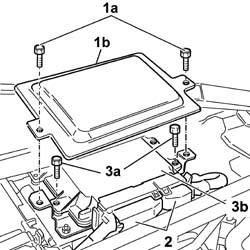

1058A80 cng injection unit control unit - r r
- Path
- Procedures > 10 ENGINE > 1058 CNG FUEL SYSTEM > 1058A gas circuit multi point injection > 1058A80 cng injection unit control unit - r r
- Kind
- repair procedure (removal / refitting; the operation number is the code)
- Applies to
- all engines; all production periods; only with equipment: BIPOWER
- Interactive page
- https://sloeber94.github.io/elrnDB-fDbl/en/#/2584553
Applies to: all engines; all production periods; only with equipment: BIPOWER
 Removing
Removing
 Refitting
RefittingDisconnect the battery negative terminal.
5050B34 windscreen wiper arm/s complete with blade - r+r
7055A18 Windscreen base TRIM - R.R.
1. Undo the bolts (1a) and remove the protective cover (1b).
2. Disconnect the electrical connections from the CNG control unit.
 | Name | Connector |
|---|---|---|
2 | Methane injection control unit | M19A |
| Name | Connector |
|---|---|---|
2 | Methane injection control unit | M19B |
3. Undo the fixing bolts (3a) and remove the CNG control unit (3b).

Applies to: all engines; all production periods; only with equipment: BIPOWER
Refitting
RemovingFit the CNG control unit.
Connect the electrical connections and tighten the bolts fixing it to the bracket.
| Name | Connector |
|---|---|---|
- | Methane injection control unit | M19A |
| Name | Connector |
|---|---|---|
- | Methane injection control unit | M19B |
Fit the protective cover on the CNG control unit and tighten the fixing bolts.
7055A18 Windscreen base TRIM - R.R.
5050B34 windscreen wiper arm/s complete with blade - r+r
Connect the battery negative terminal.